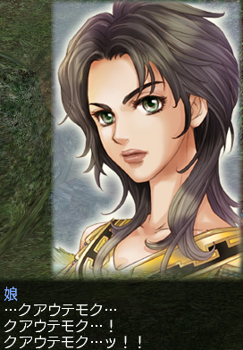
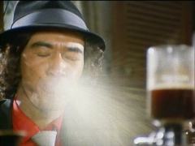
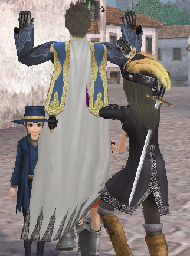
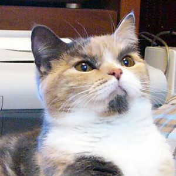

さて。
ちょいと所用で群馬まで行って来ます。
|ω･)ﾉｼ 2,3日で帰ってきますー
中南米エピソード1 をクリアしました。
クアウテモク
 クアウテモク
クアウテモク
クアウテモウク
クアウテモク
何言ってんの？
(#ﾟдﾟ)￢⌒)д`）~'; ﾊﾞｼｯ
痛い！叩けば直るってなもんだけど、俺は叩いても直らないの！！
※ つまり、壊れてはいる
今日はとてもいい天気だ、、、
太陽があんなに輝いているよ、、、
太陽の恵みをいっぱいに受け、布団を干し、遅めの昼食をとる（
ふう、お茶でも飲もうか、、、
ブッ
お茶の中にカメムシが入っていました。
殺す気か( ﾟﾛﾟ)
はい、こんにちは。
タイトルどおり、日々順調に大航海しております。
先日、商会の皆様と模擬海戦というものを初めて行いまして、
なるほど、参考になるわ悔しい思いするわクリティカル入れて沈めて快感だわで
とても楽しいひと時を過ごしました。
で、模擬が終了して踊っていた時のSSを公開。

|ω･)・・・。
|ω･)なんか間抜けなSSになってしまった（
映画、ゴッドファーザーを借りてきました。
いやー面白い。
なんて、ファミリーなんだ（どんな
これは、男の子が絶対に観るべき映画、その２ですね。
えー。突然ですが、、、
『トラックボール』ー
・わーすごーい、イキナリ10位だー
※参考リンク
『Happy Hacking Keyboard』－－
・わーすごーい、変態にしかわかんない良さが早くもー
※参考リンク
『Windows2000』－
・うっわーまさかのOSがランクインだー
でも、指示された事のみ正確に行うってゆースタンスだから、とても使いやすいのだー
二瓶勉作の『BLAME!』
惣領冬実作の『チェーザレ』
・ひゃっほーまさかの漫画がランクインだー！
『BLAME!』 は、スーパーサイバーパンク漫画で、こんな世界があったらなーなんて
色々妄想しちゃって止まらないのだー
『チェーザレ』 は、14世紀頃のピサで、
神という存在について学問と政治が様々な形で織り成す模様が堪らなく面白いのだー
あの君主論で有名な、ニッコロ・マキァヴェッリも出てきますよー！
チェーザレのスペルはCESARE。ラテン語読みで、カエサルですよ！！
※参考リンク(BLAME!)
※参考リンク(チェーザレ)
『風の谷のナウシカ(原作)』－－
・や、これはホント、読むべきですよー！
映画版の内容なんか、2巻の前半で終わっちゃいますからねー
人間とはなんぞや？
人間とは、闇を照らす光だ！
違う！人間は闇に瞬く光だ！
※参考リンク
(映画)『ゴッドファーザー』－－
・男の子が絶対に観るべき映画、その2！！
まあ観て下さい。
観て下さいーー！
※参考リンク
(映画)『ショーシャンクの空に』－－
・男の子が絶対に観るべき映画、その1！！
まあ観て下さい。
観て下さい。
観て下さいー！！
物語が二転三転し、その全てがふわりと着地して解決する、ヒューマンストーリー
キァーーー( ´;ﾟ ;ё;ﾟ ;)
※参考リンク
(作家)『浅田次郎』－－
・天斬り松闇語り
歩兵の本領
オーマイゴッド！
嗚呼、もう全てがサイコーー
※参考リンク
『バイク』－－
・えええここまで来てやっぱりソレー！？
なんて言わないで！
やっぱりこれは、俺の中で絶対なんです！
ああ、そうさ！
結局は伝えたかっただけですよ！
でも、自信を持ってお勧めしているのは間違いないどす。
俺、適当な事といい加減な事しか言いませんが、嘘はつきません。
一度騙されたと思って、ってか
一度騙されてやるかってぐらいの酔狂な心で体験してみてくださいーー
あ、今日は暖かかった。
なにやら平均気温20度の春日和だったそうで。
うし、そろそろ冬季保存していたバイクを開放し、遠くへ出かけよう。
そう、( `・ω・)ｷｯ と心に決めた、猫ちゃんなのでした（何
